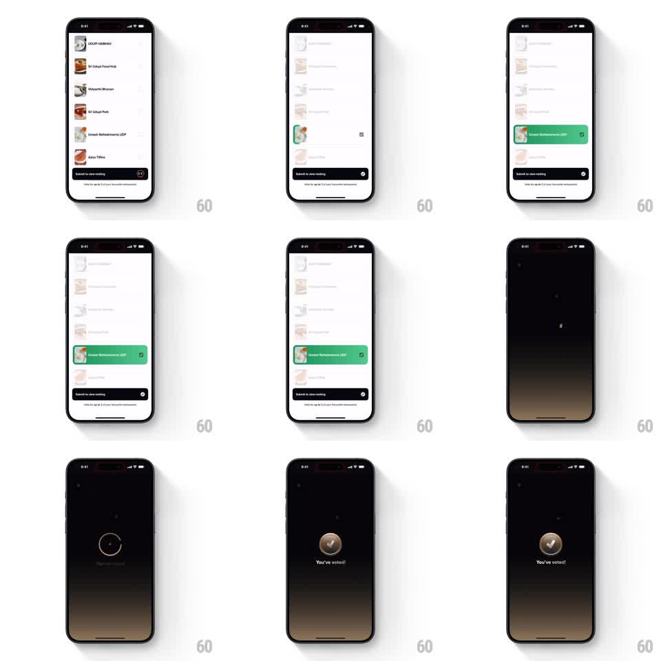

Media
Frame-by-frame

Rebuild this animation 1:1: Swiggy's vote-submitted moment - the chosen restaurant row flashes green, the screen falls to a starry dark stage, and a golden checkmark coin zooms in over a "You've voted!" line.

Rebuild this animation 1:1: Swiggy's vote-submitted moment - the chosen restaurant row flashes green, the screen falls to a starry dark stage, and a golden checkmark coin zooms in over a "You've voted!" line.
## Integration
Integration: stack-agnostic spec - springs given as stiffness/damping, timed motions as duration + curve; map every value to your framework and animation library of choice.
## Scene
A restaurant list (Udupi Upahar, Sri Udupi Food Hub, Vidyarthi Bhavan, Sri Udupi Park, Umesh Refreshments UDR, Aaha Tiffins) with a dark "Submit to clear ranking" bar pinned at bottom. On submit, the picked row ("Umesh Refreshments UDR") highlights green with a check. Then the screen dims to black with faint stars, a thin circle draws at center, and a skeuomorphic gold coin with an embossed checkmark zooms in above the text "You've voted!".
## Motion spec
Pattern: row confirmation, stage crossfade, coin zoom.
- The picked row flashes: background wipes to green left-to-right (300ms), its check scales in (0.5 -> 1, spring ~380/18).
- The list crossfades to the dark star field (400ms); tiny stars twinkle in (opacity pulses, staggered).
- A thin ring draws itself at center (stroke, 350ms), then the gold coin zooms from far away (scale 0.2 -> 1.15 -> 1, spring ~260/14, 500ms) with a warm glint sweeping its face (200ms) as it lands.
- "You've voted!" fades and rises beneath the coin (250ms, 100ms after landing).
## Calibration
- The coin reads metallic: radial gold gradient, embossed check, rim highlight - flat yellow kills it.
- The zoom has real depth: start small and slightly blurred, sharpen on landing.
## Reduced motion
Row flash and coin fade in place (300ms); no zoom travel.
## Don't miss
- The star field is sparse and dim - a backdrop, not a fireworks show.
- The coin lands center-screen and stays; no drift after landing.